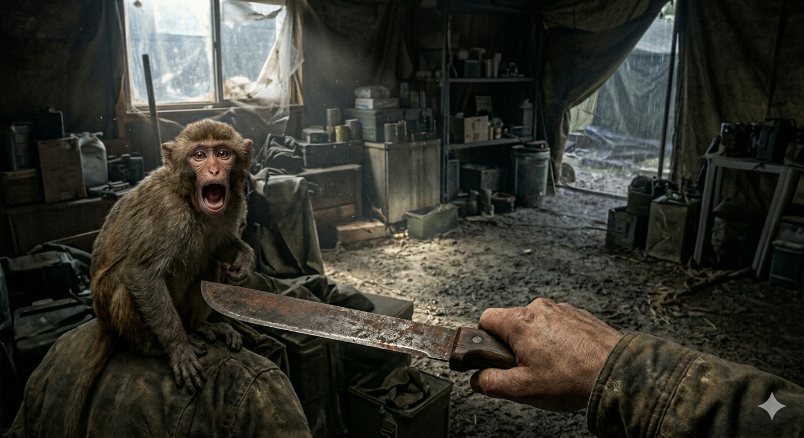

Du ignorierst das komplizierte Funkgerät und durchsuchst die alten Schubladen der Station. Dein Fleiß wird belohnt: In einer Kiste findest du ein paar alte, aber luftdicht verschlossene Konservendosen und eine rostige, aber scharfe Machete. Endlich hast du Nahrung und ein Werkzeug!
Doch plötzlich erstarrt der kleine Affe auf deiner Schulter und fängt wild an zu kreischen. Von draußen, direkt vor der Tür der Station, hörst du ein tiefes, bedrohliches Knurren. Ein riesiges, wildes Dschungelschwein hat deine Witterung aufgenommen und blockiert den einzigen Ausgang!